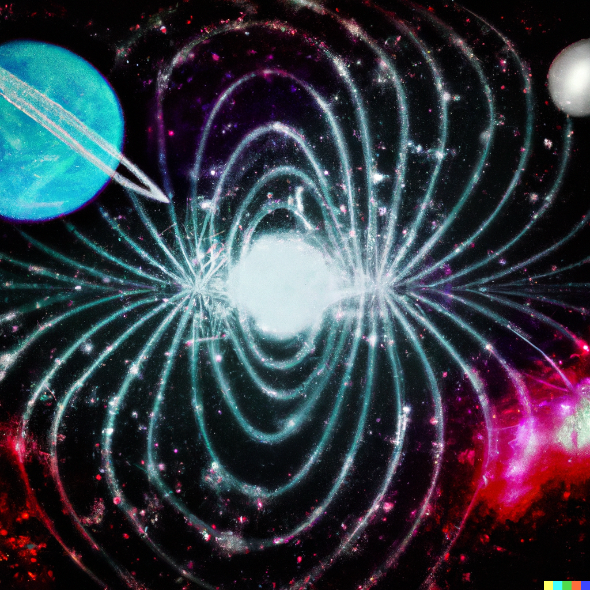

Epic Music

When we talk about the very broad concept of "compositional methods," we might actually be referring to things like compositional tools, orchestration templates, a recognizable texture, or even a specific structural form. The two pieces of music showcased here utilize similar "compositional methods." They exhibit similar emotional progressions (what can be termed 'incremental progression'), similar musical section structures, and both employ large orchestral arrangements. In their textures, one can find similarities as well, such as recurring string patterns and arpeggiated piano motifs. This type of music often appears in grand scenes in film and television, which is why I refer to this style as "Epic Music."


00:00 / 00:00
7th Sense
1. 7th Sense （点击这里在Bilibili上收听 bilibili）
The title of the piece hints at some of the initial conceptual ideas, namely the use of a 7-beat rhythm. This time signature forms the foundation upon which a piano arpeggio motif is built, which then evolves through expanding the orchestration, adding harmonies, and developing into new musical sections. A distinctive feature in the middle section of the piece is an almost purely rhythmic part where the melody fades away. This textural structure is something I particularly enjoy using in this style of music. It functions similarly to the "breakdown" in EDM or metalcore music, serving as an excellent tool for introducing new rhythmic patterns or ostinatos. It also sets the stage for the introduction of the new melodic section. You can listen to it on Bilibili by clicking here:


00:00 / 00:00
2. NeoWise （点击这里在Bilibili上收听 bilibili）
As the introduction suggests, these two pieces of music employ almost identical "compositional methods," akin to products made on the same assembly line but with different materials (though I'm not fond of this analogy). However, compared to the former, the initial concept for this piece was based on a chord progression. The other elements are strikingly similar in their creative approach: the use of a piano arpeggio motif, a rhythmically driven middle section, a gradual progression of musical emotions, and the use of similar coloristic or atmospheric instruments, such as distorted electric guitars and synthesizer subs. These similarities indicate a consistent method in the creation process, even though the foundational ideas of each piece differ.